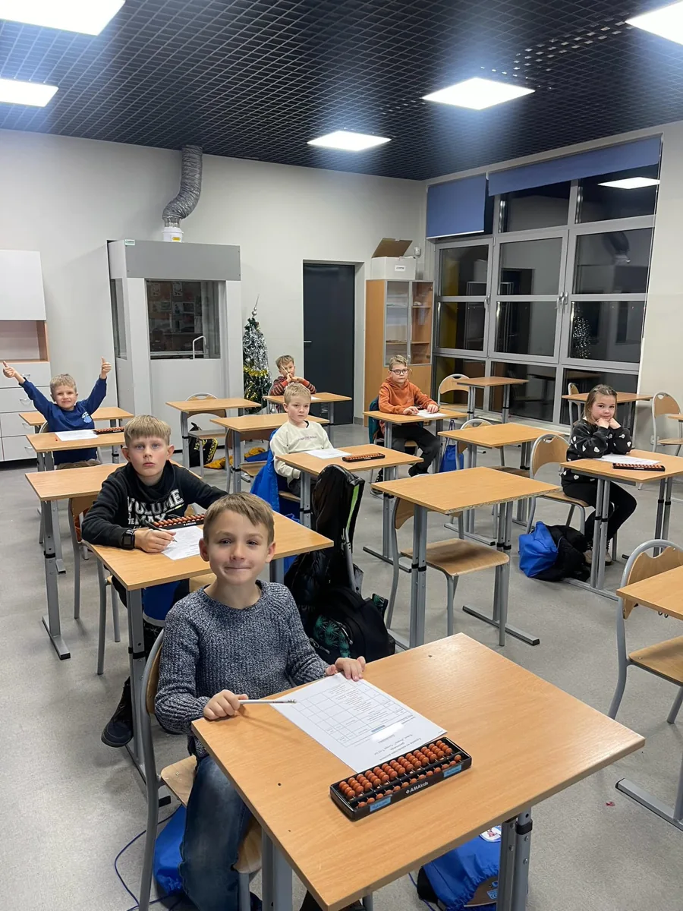

Mental Calculation from Day One
Learners can try visualizing the abacus in their first session. They continue using the physical abacus while building confidence with the mental version.
A Next-Generation Brain Workout
An AMAkids program for ages 5–16. Children work with a Japanese abacus and learn to picture it in their minds, practising visual memory, sustained attention and mental calculation.

The program starts with the Japanese abacus, or soroban. Children move the beads with both hands, then learn to picture the abacus and move its beads mentally. As the exercises get more challenging, they practise keeping track of changing numbers while staying focused on the calculation.

Learners can try visualizing the abacus in their first session. They continue using the physical abacus while building confidence with the mental version.
Short games and progressively harder exercises give children reasons to keep practising. A later challenge might combine mental addition with reciting a short rhyme.
In-person sessions use abacuses, workbooks and movement games. At home, students can revisit the same skills through teacher-assigned platform activities.
Picture where the beads are, then update the image as each number is added or subtracted.
Stay with a sequence of numbers, recover after a mistake and work through a challenge step by step.
Respond to numbers at a gradually increasing pace while keeping track of the correct answer.
Break down calculations and use visual strategies to keep track of changes on the abacus.
Follow numbers spoken aloud or shown on a screen and connect them to the same mental image.
Take on challenges independently and notice progress by comparing new attempts with earlier ones.
Two learning tracks and three age groups. The Junior track includes ages 5–6 and 7–10. Ages 11–16 follow the Senior track.
Two 35-minute blocks
A gentler introduction with age-adapted materials and an active break between blocks.
Two 45-minute blocks
Students build fluency with the abacus and progress to more demanding mental exercises.
Two 45-minute blocks
Older learners follow a separate track with age-appropriate materials and calculation challenges.
A typical schedule is one weekly meeting with a short break. Recommended group sizes are up to six for ages 5–6 and up to ten for older groups. Local arrangements may vary.
Year 1
Start with Basic, then move through Brothers, Friends & Level Up and combined practice with Anzan, or mental abacus calculation.
Optional advanced track
Continue addition and subtraction with more demanding multi-digit exercises. This track can support advanced practice and competition preparation where offered.
Year 2
Build on abacus and mental calculation skills with multiplication and division of multi-digit numbers.
Between meetings, students consolidate what they learned through short, teacher-assigned practice sessions called Neurotraining.

Practise with flashcards or take on Turbo and Double Power, a challenge that gives learners two calculations to solve at once.
Students can earn AmaCoins, unlock bonuses and see their progress through the platform’s rankings.
The AMAkids app supports offline practice on compatible devices. Check current availability for your device and account.
Students can build towards local championships and international AMAkids competitions, with online and in-person events.
These milestones show how tasks can develop with regular lessons and practice. Dates are a guide and each child progresses at their own pace.
Month 1
Represent numbers with beads and begin solving short sequences.
Around months 1.5–2
Picture the beads and make simple changes without moving the physical abacus.
Around months 3–4
Build towards two- and three-digit examples as accuracy improves.
First part of the course
Practise longer sequences and more varied combinations on the mental abacus.
Second part of the course
Apply the methods to multi-digit operations and explore advanced challenges where appropriate.
Using the abacus to solve a sequence gives children a chance to practise holding and updating numbers in their minds. It is a different experience from entering an operation into a calculator.
Mental Arithmetic is an enrichment program. The abacus gives children another way to represent numbers, and pupils continue using the methods their school teacher asks them to use in class.
Practice includes short digital activities alongside hands-on work with the abacus and printed materials. Trainers can adjust the pace of number flashes and explain the practice plan for your child’s age group.
The program starts with a hands-on introduction for children aged 5–16. Visualizing and moving beads gives beginners a concrete way to work with numbers.
AMAkids provides a structured methodology, original workbooks, access to the learning platform and training for your teaching team. Explore partnership options for schools, education centers and new operators.